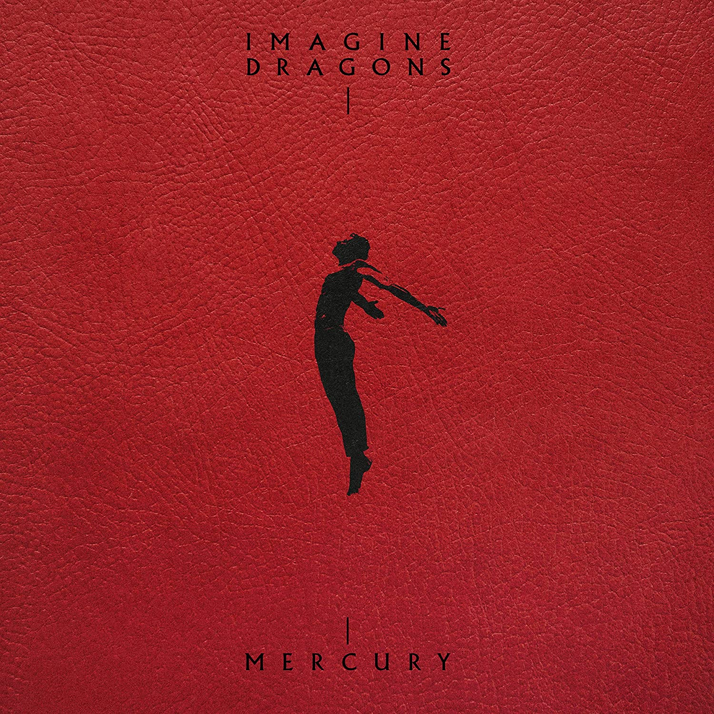
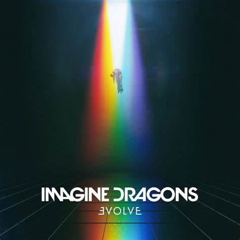
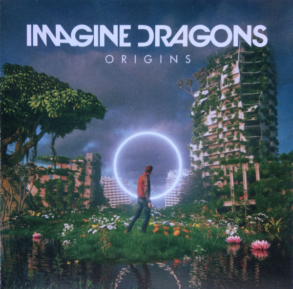
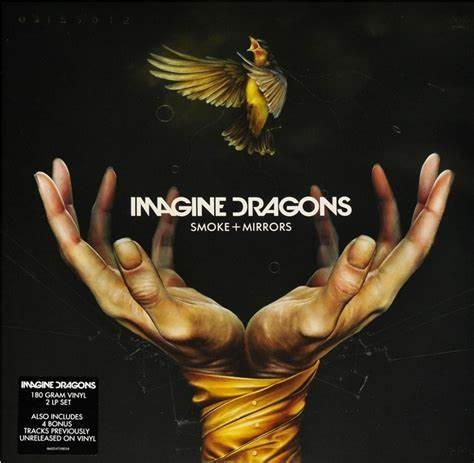

Formed in 2009, Imagine Dragons first revealed their emotionally charged and inventive sensibilities with a series of independently released EPs that earned them grassroots following. Signed to KIDinaKORNER/Interscope by hitmaking producer Alex Da Kid, the band greatly expanded their fanbase with the release of their multi-platinum breakthrough single “It‚s Time” (featured on the 2012 EP Continued Silence). With their past hits also including “Radioactive” (a diamond-selling smash that won Best Rock Performance at the 2014 Grammy Awards), Imagine Dragons went on to see Smoke + Mirrors debut at #1 on the Billboard Top 200 album chart upon its release in early 2015.

Mercury - Acts 1 & 22022 |

Evolve2017 |

Night Visions2012 |

Origins (Deluxe)2018 |

Smoke + Mirrors2015 |